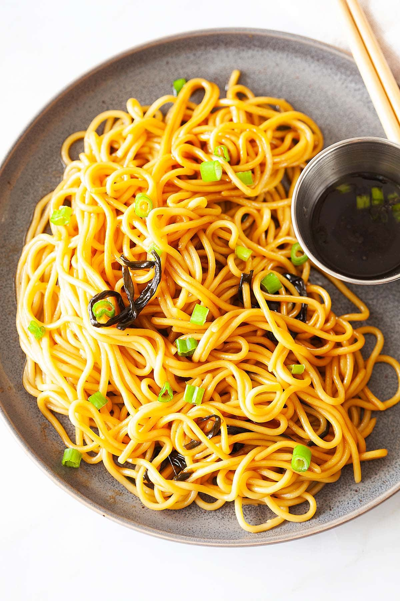

Scallion Oil Noodles
Ingredients
Fried Minced Meat:
- 3 tablespoons cooking oil
- 2 stalks scallion, roots trimmed and cut into strips
- 8 oz. (226 g) fresh noodles
-
1 tablespoon
oyster sauce
-
1 teaspoon
soy sauce
Instructions
-
Heat up a wok with the cooking oil until it begins to smoke. Add the
scallion strips and stir continuously with the spatula until the
scallions are aromatic and becomes moderately burned.
(This process will release the full fragrance of the scallions and
infuses the scallion oil with the intense aroma.) Set aside the
scallion oil.
-
Heat up a pot of water until it boils. Cook the fresh noodles al dente. The noodles should be cooked through but still somewhat firm and
springy. Drain the noodles and transfer into a bowl.
-
Add the scallion oil, oyster sauce and soy sauce into the noodles.
Using a pair of chopsticks, toss the noodles to blend well with the
scallion oil and seasoning sauces. Serve immediately.
